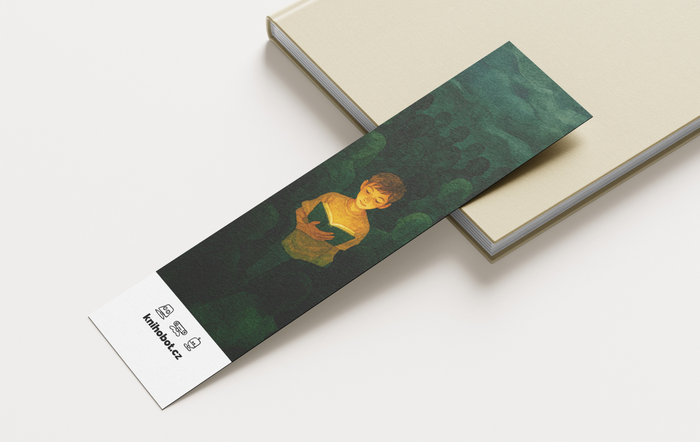

We placed the solution literally in the reader's hands. The bookmark acts as a functional tool during reading and a strategic call-to-action at the end. It transforms the passive act of finishing a story into an active decision to pass it on. The front features atmospheric, dream-like illustrations, ensuring the bookmark is kept as a souvenir rather than discarded like a flyer. The back side removes friction with a clean infographic and scannable QR code. It simplifies the Knihobot process into four steps, showing just how easy it is to recirculate a book.
Turning finished books into new beginnings
Role
Graphic Designer & Illustrator
Company
Knihobot
Product
Promotional Materials (Bookmarks)
Focus
Illustration, Infographic Design, Print

Mission
Closing the loop
People often hoard books they'll never read again simply because they don't know what to do with them. The Knihobot service solves this—they can resell them online. The challenge was to remind readers that their books can have a second life exactly when it matters most—the moment they finish reading.
The Concept

Result
The story continues
The design interrupts the hoarding cycle exactly when it matters. By placing clear instructions at the end of the book, we captured readers in the moment they need a solution—letting the story continue in another library.